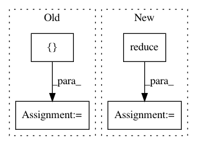

651b7d63f09c73e5a093b64c97dd6266265ff930,torch_geometric/nn/functional/spline_utils.py,,weight_index,#Any#Any#Any#,113
Before Change
// 1. Calculate offset.
// TODO: more elegant, please!
offset = [1]
curr_kernel = 1
for i in range(len(kernel_size) - 1):
curr_kernel *= kernel_size[i]
offset.append(curr_kernel)
After Change
// kernel [k_1, k_2, k_3]` the offset is given by [k_2 * k_3, k_3, 1].
// 1. Calculate offset.
off = [reduce(lambda x, y: x * y, kernel_size[i:]) for i in range(1, dim)]
off.append(1)
off = torch.LongTensor([off]).t()
// 2. Apply offset.
In pattern: SUPERPATTERN
Frequency: 4
Non-data size: 4
Instances
Project Name: rusty1s/pytorch_geometric
Commit Name: 651b7d63f09c73e5a093b64c97dd6266265ff930
Time: 2017-10-21
Author: matthias.fey@tu-dortmund.de
File Name: torch_geometric/nn/functional/spline_utils.py
Class Name:
Method Name: weight_index
Project Name: open-mmlab/mmdetection
Commit Name: 2d2e5c6f42b6f4b8ab4f68985b1fd7823e3be505
Time: 2021-01-13
Author: 35596075+congee524@users.noreply.github.com
File Name: docs/stat.py
Class Name:
Method Name:
Project Name: wenwei202/iss-rnns
Commit Name: 535d15402492fc10579a3211dc83c74f2741cc31
Time: 2016-10-23
Author: seominjoon@gmail.com
File Name: my/tensorflow/general.py
Class Name:
Method Name: flatten
Project Name: Qiskit/qiskit-aqua
Commit Name: 986cdd57271be984d8279c87ef6e5b592b48e726
Time: 2018-10-17
Author: chenrich@us.ibm.com
File Name: qiskit_aqua/algorithms/adaptive/vqe/vqe.py
Class Name: VQE
Method Name: _energy_evaluation